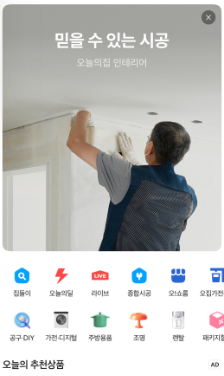
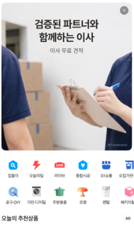
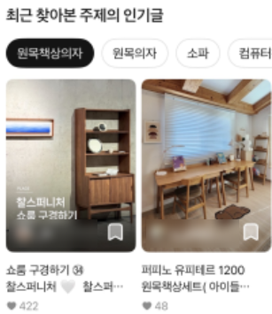
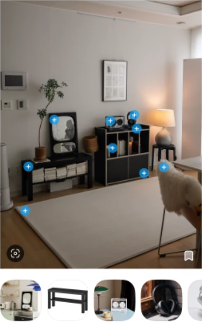
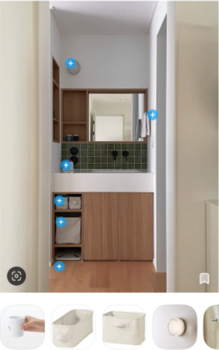

서비스 분석
광고인 줄 몰랐는데… 내가 이미 보고 있었다
광고야, 콘텐츠야? 오늘의집이 '광고 매체'가 된 이유
3줄 요약
- 오늘의집 같은 커머스 앱은 유저 데이터를 분석해 '가장 살 것 같은 순간'에 광고를 콘텐츠처럼 띄워요. 이걸 RMN이라고 해요.
- 인테리어 플랫폼은 유저의 취향과 공간 데이터가 있어서 타겟팅이 정교하고, 광고가 '인테리어 팁'처럼 소비돼요.
- 플랫폼은 광고 지면 판매로 수익을 얻고, 브랜드는 광고 효율을 높여요. 광고가 곧 판매 채널이 되는 거예요.
최근 오늘의집 같은 커머스 앱을 켜면 이런 생각이 들어요.
"이거 방금 내가 고민하던 건데, 광고야 정보야?"
경계가 흐릿해진 이 현상의 중심에는 요즘 빠르게 커지고 있는 광고 모델, RMN이 있어요.
RMN, 한 마디로 정의하면?
RMN은 리테일 미디어 네트워크(Retail Media Network)의 줄임말이에요. 쇼핑 플랫폼이 자기 앱의 광고 자리와 구매 데이터를 이용해 파는 광고를 말해요. 비유하자면 이런 점원이에요.
내가 라면 코너 앞에 서자마자,
조용히 양은냄비 할인 쿠폰을 건네주는 '눈치 만렙' 점원
과거의 쇼핑몰이 단순히 상품을 진열했다면, 지금의 플랫폼은 유저의 데이터를 분석해 '가장 살 것 같은 순간'에 광고를 콘텐츠처럼 띄워요. 불특정 다수가 아닌, '준비된 구매자'만 골라내는 기술이죠.



인테리어 플랫폼이 RMN에 강한 이유
-
데이터의 '질'이 달라요.
단순 검색을 넘어 유저는 자기 방 사진(스타일)을 올리고, 특정 무드(미니멀, 빈티지 등)를 저장해요. 이제 플랫폼은 유저의 '취향'과 공간 규모를 추정할 수 있어요.
-
타겟팅이 정교해졌어요.
예를 들면, 과거엔 20대 여성에게 소파 광고를 했다면 2026년엔 미니멀 원룸 스타일을 5번 이상 저장한 유저에게 소파 광고를 하는 셈이에요.
-
광고가 정보처럼 소비돼요.
유저 리뷰 속 상품 태그, 브랜드 협업 매거진 등은 광고지만 유저에겐 '인테리어 팁'으로 소비돼요. 그래서 거부감은 낮고, 구매로 이어지기도 쉽죠.


집들이 사진 속 파란 + 표시가 상품 태그예요 · 오늘의집 앱 캡처
수익 구조가 바뀌었어요
이 변화는 기업의 수익 구조를 바꿨어요. 유통사(플랫폼)는 상품 판매 수수료를 넘어, 플랫폼 안의 '광고 지면 판매'라는 고수익 모델을 확보했어요. 브랜드(마케터)는 엉뚱한 곳에 광고비를 태우지 않고, 확실한 타겟에게만 비용을 집중해 광고 효율(ROAS, 광고비 대비 매출)을 높여요.
결과적으로, 상품 자체가 광고가 되고, 광고가 곧 판매 채널이 되는 '콘텐츠 커머스'가 완성되는 거예요.
알고리즘과는 뭐가 달라요?
RMN 안에 알고리즘이 포함돼요. 알고리즘이 유저의 가려운 곳을 찾아내고 긁어 주는 '기술'이라면, RMN은 그 알고리즘을 활용해 가장 적절한 타이밍에 상품(광고)을 노출하고 수익으로 연결하는 '비즈니스 모델'이에요.
결론
처음엔 광고인 줄 몰랐고, 알고 나서도 소비자는 클릭해요. 나에게 지금 '꼭 필요한 정보'라고 느껴지기 때문이에요. RMN은 단순한 기술이 아니라, 유저의 라이프스타일 속에 자연스럽게 스며들어요.